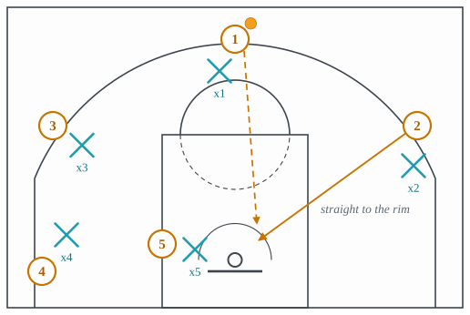
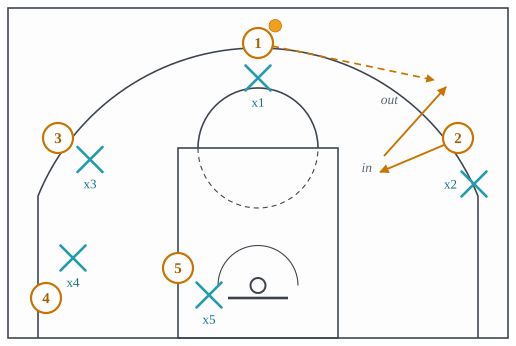

Cuts and actions
The movements that are not screens: handoffs, cuts, seals, drives and the passes that follow.
All families · 24 terms · 20 full, 0 partial, 4 short
45 cut
A perimeter player cutting to the rim at a 45-degree angle when his defender’s eyes leave him to help on a drive.

Why it is run. A defender whose head turns to a drive cannot see his own man; the cut to the rim at 45 degrees behind him is the drop-off the drive did not need to reach the rim to create.
What beats it. Helping with the eyes and not the feet, or a stunt at the drive that keeps the defender close enough to recover.
Back cut
Also: backdoor
A cut behind an overplaying defender to the rim.
![Half court. 1 has the ball at the top, with his defender, x1, just below him and to his left. 2 is on the right wing. His defender, x2, stands above him and toward the ball, in the passing lane, labeled denying the wing. 2 cuts straight to the rim behind x2, a solid arrow labeled back door that ends at the right edge of the restricted arc. A dashed pass from 1 runs down the lane and stops just above the end of the cut, leading him to the rim. 3 on the left wing, 4 in the left corner and 5 at the left dunker spot each have a defender on the basket side of him.](../figures/back-cut.svg)
Why it is run. A defender who denies the pass has his weight toward the ball and his back to the rim; the cut behind him is a layup he chose to allow.
What beats it. Denying with the ball-side foot and hand only and staying half a step lower than the man, or top-locking only with help under the rim.
Basket cut
Any hard cut straight to the rim.

Why it is run. It is the simplest way a player without the ball threatens to score; a defender who is watching the ball or standing a step off has to turn and run with him, and a defender who does not is beaten to the rim.
What beats it. The defender staying between his man and the basket and bumping the cutter off his line, with the weak-side help already in the lane before the pass.
Boomerang
A pass to a teammate followed at once by a pass straight back, so the first handler catches again on the move with his dribble still alive.
![A switch has left the defense's big, x5, guarding the guard 1 at the left slot; he stands a few steps off 1 toward the lane, labeled switched big. 1 passes across the top to 2 at the right slot, labeled out and back, and steps out to the left, away from the big, staying outside the arc. 2 passes straight back, and the return pass ends just short of where 1's step-out ends. From there 1 dribbles past the big, on the big's left, into the lane toward the rim. The other defenders stay with 2 at the right slot, 3 on the right wing, 4 in the right corner and 5 in the left corner.](../figures/boomerang.svg)
Why it is run. A handler who is standing still is easy to guard; the return pass gives him the ball moving, against a defender who relaxed when the ball left, and it is how a team goes back to a mismatch a switch has just given it.
What beats it. The on-ball defender staying attached when the ball leaves and denying the return pass; and help arriving early on the drive the mismatch invites.
Cut
Any quick move by a player without the ball to get open for a pass or to clear space for a teammate. Every named cut on this site is one kind of it.
Dribble handoff
Also: DHO, handoff
The ball-handler dribbles toward a teammate and hands the ball off, screening the receiver’s defender in the same motion.

Why it is run. A handoff gets the receiver the ball with a defender behind him instead of in front of him, which is what a ball screen buys, without a screen the defense can call out.
What beats it. Switching the exchange so the receiver’s new defender is already in front, or going under against a receiver who cannot shoot.
Drive
Also: penetration
Dribbling past a defender toward the rim to score or to force help and pass.
![The ball-handler 1 at the right slot dribbles down into the gap toward the middle of the lane, labeled into the gap; his defender, x1, is off to his right, out of the path of the dribble. The top, the spot between 1 and 3 at the left slot, is empty. Two help defenders react, each drawn with an arrow: x3, the defender of 3, stands at the nail and steps across in front of the drive, labeled steps across; x4, the defender of 4 in the left corner, sinks from the left side toward the lane and the rim, labeled sinks. 3 at the left slot and 4 in the left corner are left unguarded. 5 stands in the left dunker spot with x5 between him and the rim, and 2 is in the right corner with x2 above him.](../figures/drive.svg)
Why it is run. Beating a man into the gap forces a second defender to commit, which is what a ball screen buys without needing a screen; from that moment the driver is looking at the man the helper left, not at the rim.
What beats it. Guarding the drive with one defender, a stunt that fakes help and recovers, or a wall in the middle that concedes the pull-up.
Early seal
A big pinning a smaller defender under the rim the instant a switch happens, before the defense can fix it.
![1 has the ball just right of the top of the key. The ball screen has been switched: x5, the big's original defender, now guards 1, labeled switched. 5, the big, stands at the right end of the free-throw line and cuts down the right side of the lane to beside the rim. x1, the guard-sized defender who switched onto him, is pinned below him beside the rim, labeled small defender pinned. 1's pass comes from the top, straight down the lane to the left of 5's cut, and ends just beside where 5 seals, on the side away from x1. 2 and 3 are in the corners and 4 is on the left wing, each with a defender.](../figures/early-seal.svg)
Why it is run. A switch puts a small defender on the big for one or two seconds; pinning him under the rim before help or a switch-back arrives turns that instant into a layup.
What beats it. The scram switch, a third defender taking the big before the entry pass while the small defender rotates out.
Flash
A quick cut into an open spot in the defense, usually across the lane toward the ball, to catch where nobody is guarding.
![The ball is with 1 at the right wing; his defender, x1, is just below him. The other defenders have sagged toward the ball: x2 is off 2 at the top toward the right, x3 is well inside 3 at the left wing, x4 is above 4 in the right corner, and x5 stands in the paint near the rim. The free-throw line is empty, labeled the empty spot. 5, a big starting just inside the left lane line near the block, labeled flash, cuts diagonally up across the lane to the free-throw line, passing to the left of x5, who is now behind him. A dashed pass from 1 meets him there.](../figures/flash.svg)
Why it is run. A defense that shifts toward the ball leaves a spot, usually the free-throw line, and the weak-side player who cuts into it catches facing the basket in the middle of the defense.
What beats it. A defender who bumps the flasher crossing the lane and keeps a body between him and the ball; in a zone, the middle defender whose spot it is.
Get action
Also: get
A guard passes to a big and immediately follows the pass to take a handoff back, a two-man action that starts a possession.

Why it is run. A pass and a return handoff start a possession in two seconds from a standstill, with the guard receiving the ball moving off a big’s body.
What beats it. The guard’s defender staying attached through the pass, which denies the handoff and leaves the big holding the ball at the elbow.
Give and go
Pass to a teammate, cut to the rim, and get the ball back.

Why it is run. A defender relaxes for one step when his man gives up the ball, and one step is enough for the cut to the rim and the return pass.
What beats it. Jumping to the ball on the pass, so the defender is between his man and the rim before the cut starts.
High-low
Also: hi-lo
Two bigs, one at the high post and one at the low post; the high one catches and feeds the low one, who has sealed his man.

Why it is run. The low post’s seal holds a fronting defender where he is while the pass comes from the high post above, where the fronting defender cannot reach it.
What beats it. The low defender playing behind rather than fronting so there is no seal to hold, or the weak-side low man arriving on the catch.
Iverson cut
Also: Piston cut
A cut from one wing to the other across two screens set at the elbows, to catch on the move.

Why it is run. Wing to wing over two bigs at the elbows puts two bodies between the cutter and his defender and delivers the catch on the move, with the whole side of the floor ahead.
What beats it. Going under both bigs along the free-throw line to meet the cutter at the far wing, conceding the curl, or switching at the second elbow.
Kick-out
Also: drive and kick
A pass from a driver to a perimeter shooter whose defender helped on the drive.
![1 has the ball in the paint just above the rim, with his defender behind him, up and to the right. The weak-side wing defender, x3, has left 3 on the left wing and helped into the lane on the left side of the rim, labeled he helped. 1 passes out to 3, a dashed line labeled kick-out that ends just short of him. A second dashed line runs from 3 down the left side to 4 in the left corner: the further option, labeled swing on, if 3's defender recovers. 4's defender is above him toward the lane, 2 is in the right corner with his defender above him, and 5 is low on the right with his defender between him and the rim.](../figures/kick-out.svg)
Why it is run. The pass to the shooter whose defender helped is the shot the drive was for; with a shooter in each corner the help has to come from one of them.
What beats it. A closeout short enough to contest the shot without giving up the drive, or an X-out rotation that covers the corner with a different defender.
L-cut
A cut up the lane line from the block to the elbow and then flat out to the wing, so the two legs make an L.
![Half court. 1 has the ball at the top, with his defender, x1, below him. 2 starts on the right block with his defender, x2, beside him outside the lane. 2 runs straight up the right lane line to the elbow, labeled up the lane line, then turns flat and cuts out to the right wing, labeled out to the wing. The two legs of the cut make an L. A dashed pass from 1 goes out to the right wing and ends just above where the cut ends. 3 on the left wing, 4 in the left corner and 5 on the left block each have a defender.](../figures/l-cut.svg)
Why it is run. Starting inside makes the defender guard the lane first; the turn at the elbow is a change of direction he has to follow from behind, so the catch at the wing is made facing the basket with the defender trailing.
What beats it. The defender beating the cutter to the elbow and stepping into the turn, or playing high enough at the wing that the cutter has to keep going to the basket.
Lift
A corner player moving up to the wing as the ball is driven baseline, to give the driver a kick-out.
Lob
Also: alley-oop
A pass thrown above the rim for a player to catch and finish in the air.
Pinch post
A big catching at the elbow facing the ball, from where he can hand off, shoot or pass to a cutter.
Post-up
An offensive player establishing position near the block with his back to the basket to receive an entry pass.

Why it is run. Position on the block with the defender sealed behind puts the ball a few feet from the rim and makes every move a guess for the defender; it is also where a size mismatch is worth most.
What beats it. Fronting the post with weak-side help behind so the lob is contested, or a dig from the nearest guard on the catch.
Skip pass
A pass across the floor that skips the nearest player, usually to punish a defense loaded to the ball.
![The ball is with 1 on the right wing, and the defense has shifted toward him: x1 below 1, x2 above 2 in the right corner, x3 at the top of the free-throw circle to the right of 3 at the top, x5 beside 5 on the right block, and x4 in the paint left of the rim. A dashed pass runs from 1 all the way across the court to 4 in the left corner, passing above x1, x5 and x4 and below x3, labeled over the shifted defense. A teal arrow takes x4 from the paint toward the left corner and stops well short of 4, labeled long closeout.](../figures/skip-pass.svg)
Why it is run. A defense shifted to one side has to recover across the whole floor, and the closeout from the paint to the far corner is the longest in the game.
What beats it. Two defenders splitting the difference on the weak side so neither closeout is long, at the cost of leaving the strong-side help thin.
Stampede cut
Catching the ball already at full speed to blow past a slower defender closing out.
![The ball is at the top with 1, his defender below him. 2 is on the right wing, and his defender is closing out at him from the paint, where the defender had sunk to help: a teal arrow runs from that defender toward 2, labeled closing out. 2 is labeled already moving at the catch: the dashed pass ends just in front of him, and his dribble goes down toward the rim on the baseline side of the closing defender, straight past him. 5 is low on the left, 3 on the left wing and 4 in the right corner, each with a defender.](../figures/stampede.svg)
Why it is run. A closeout from the paint has fifteen feet to cover; a receiver already moving to the rim at the catch makes those feet impossible and beats the closeout before it arrives.
What beats it. A short, choppy closeout that never overruns the receiver, conceding the pull-up to stop the drive.
UCLA cut
Also: UCLA screen
A pass from the top to the wing, then a cut to the ball-side block off a back screen set at the elbow.
![1 has the ball at the top. His dashed pass runs to 2 on the right wing and ends just short of him. 5 stands at the right elbow. 1 then cuts down past the lane side of 5 and on down the lane to the right block, labeled to the block. A screen bar sits just above 5, between him and x1, the defender who was guarding 1, and 5 is labeled back screen. 2 feeds the cutter at the block with a second dashed pass. x2 is below 2 and x5 below and to the right of 5; 3 on the left wing and 4 in the left corner each have a defender.](../figures/ucla-cut.svg)
Why it is run. The pass to the wing turns the passer’s defender’s head, and the big at the elbow is a back screen whether or not one was called, so the guard arrives on the block with his defender behind him.
What beats it. Jumping to the ball side of the big before the cut and riding the cutter to the block, or a switch.
V-cut
A perimeter player stepping in toward the lane and coming straight back out to receive, so the two legs of the cut make a V.

Why it is run. The step in moves the defender toward the lane, and the plant turns his momentum the wrong way; the catch comes a step higher and wider than the defender, which is all a perimeter player needs to face up.
What beats it. The defender refusing to be drawn in and staying high in the passing lane, which invites the back cut instead.
Zoom
Also: Chicago action
A pin-down screen that flows straight into a dribble handoff, so the receiver arrives at the handoff already moving.
![The shooter starts in the right corner with his defender just inside him. A big stands above that defender and sets a pin-down on him: the screen bar, labeled pin-down, lies between the big and the defender. The shooter runs straight up past the sideline end of the screen toward the right wing. The ball-handler dribbles from the top of the key toward the same spot at the right wing, with his defender below him. The big's defender stands off him toward the lane. Two more attackers wait on the left wing and in the left corner, each with a defender. (First of 2 frames; the lecture shows the rest.)](../figures/zoom-1.svg)
Why it is run. A shooter who has used a pin-down and then a handoff has beaten his defender twice in a row and gets the ball going downhill at full speed.
What beats it. Top-locking the shooter before the pin-down so he never reaches the handoff, or switching the pin-down.